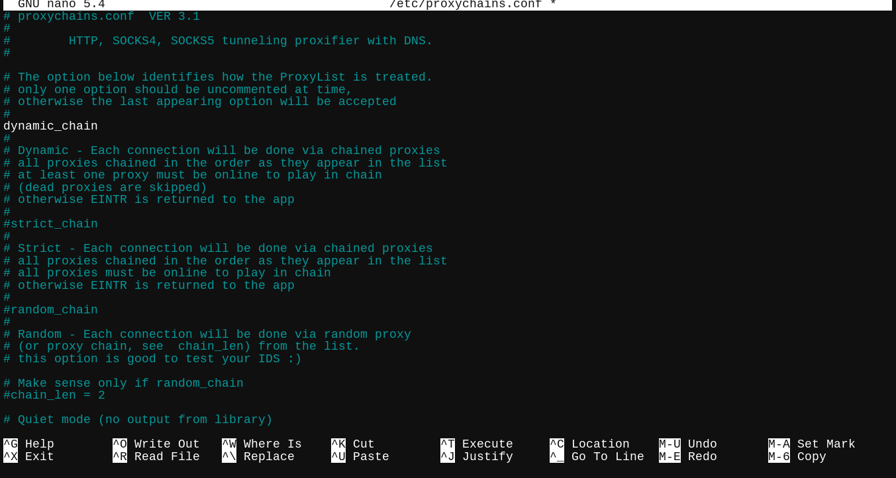

!!!USING THESE TOOLS WITHOUT PERMISSION IS ILLEGAL (except for proxychains). IF YOU USE THEM FOR MALICIOUS INTENT, YOU CAN BE SENT TO JAIL IF YOU ARE CAUGHT!!!
ProxyChains allows you to use proxy servers to hide your IP address.
To install Proxychains via your package manager, type: "sudo [OS package installer] proxychains" You may be prompted with a password, which you need to do so, and they may ask for a 'y' or 'n', aka yes or no, which you respond y. ProxyChains will now be installed on your machine.
To edit the config file, you need a text editor. In this case, we will use Nano. To download nano, do the command we used to install proxychains, but replace 'proxychains' with Nano.
This next step is very important.
You need to access the config file by typing "sudo nano /etc/proxychains.conf". This may require a password, so either enter the default root password (it depends on your operating system)
This should bring you to the config file. On the 10th line, you should see "#dynamic_chain". Delete the '#' from it. Next, on the 18th line, you should see "strict_chain". Add a '#' to the beginning. Your config file should look like this:
If it doesn't, fix it. The next step is to comment out the final line, which says "socks4 127.0.0.1 9050". 127.0.0.1 is localhost, and 9050 is the port. We don't need it, which is why we add a hashtag at the beginning. This makes it so proxychains ignores it, just like strict chains.
We will be using proxies from a website called spys.one. The website is in russian, so you need to translate it, unless you can speak i. There are 4 types of proxies. SOCKS5, SOCKS4, and HTTP. SOCKS5 is better than SOCKS4, so our targets are SOCKS5 and HTTP. For example, this proxy is 91.134.139.238:3080, and it is SOCKS5. To get this proxy running in our terminal, we need to type "socks5 91.134.139.238 3080" If we needed a username + password, we would press tab, then type the username, same with the password.
Not all proxies may work, so you will have to experiment.
Thats how you use proxychains!
Some other websites that are amazing for hacking are:
-Null Byte (here)
-Prophet Hacker (here)
-Cybrary (here)
-Offensive Security (here)
-Null Byte YouTube Channel (here)